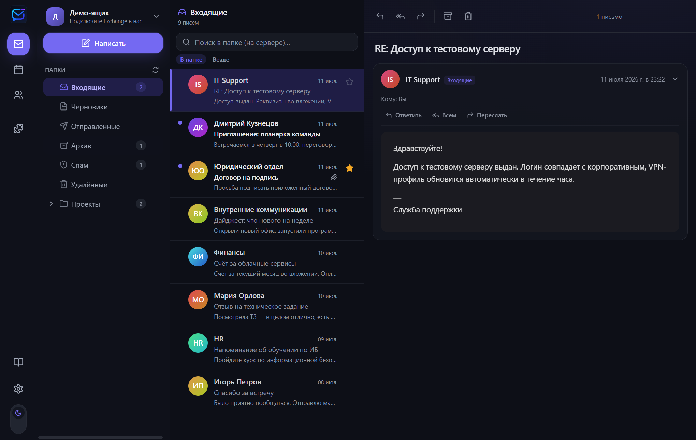

Письма собраны в беседы
Входящие и отправленные письма видны вместе. Ответы не приходится искать по разным папкам.
Беседы, календарь, быстрый поиск, вложения, черновики и горячие клавиши — всё в одном настольном приложении.

Входящие и отправленные письма видны вместе. Ответы не приходится искать по разным папкам.
День, неделя и месяц, подробности встреч, участники и перенос событий.
Горячие клавиши помогают читать, отвечать, перемещать и разбирать письма быстрее.
Оформление сохраняется. А картинки, которые письмо подгружает с чужих сайтов, не загружаются: так отправитель узнаёт, что вы его открыли. Захотите — покажете одним нажатием.
Сборка не подписана. При первом запуске Windows скажет «Не удалось проверить издателя»: нажмите «Подробнее» → «Выполнить в любом случае». На macOS откройте приложение через правый клик → «Открыть».
Дальше приложение обновляется само: новые версии докачиваются в фоне и ставятся при перезапуске.